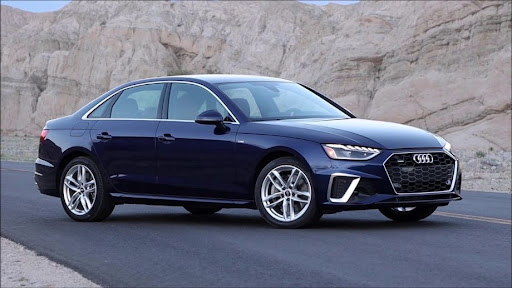

Carros
Os carros entraram em uso global durante o século XX e as economias desenvolvidas dependem deles. O ano de 1886 é considerado como o ano de nascimento do carro moderno, quando o inventor alemão Karl Benz patenteou seu Benz Patent-Motorwagen. Os carros tornaram-se amplamente disponíveis no início do século XX. Um dos primeiros carros acessíveis às massas foi o 1908 Model T, um carro norte-americano fabricado pela Ford Motor Company. Os carros foram rapidamente adotados nos Estados Unidos, onde substituíram carruagens e carros puxados por animais, mas demoraram muito mais para serem aceitos na Europa Ocidental e em outras partes do mundo.
Os carros têm controles de direção, estacionamento, conforto para os passageiros e uma variedade de luzes. Ao longo das décadas, recursos e controles adicionais foram adicionados aos veículos, tornando-os progressivamente mais complexos. Estes incluem câmeras de marcha à ré, ar condicionado, sistema de navegação por satélite e entretenimento no carro. A maioria dos carros em uso na década de 2010 é impulsionada por um motor de combustão interna, alimentado pela combustão de combustíveis fósseis. Os carros elétricos, que foram inventados no início da história do carro, começaram a se tornar comercialmente disponíveis em 2008.
Existem custos e benefícios para o uso do carro. Os custos para o indivíduo incluem a aquisição do veículo, pagamentos de juros (se o carro for financiado), reparos e manutenção, combustível, depreciação, tempo de direção, taxas de estacionamento, impostos e seguro.Os custos para a sociedade incluem a manutenção de estradas, o uso da terra, congestionamentos, a poluição do ar, a saúde pública e a eliminação do veículo no final da sua vida útil. Os acidentes de trânsito são a maior causa de mortes relacionadas a ferimentos em todo o mundo.Os benefícios pessoais incluem transporte sob demanda, mobilidade, independência e conveniência.Os benefícios sociais incluem benefícios econômicos, como criação de emprego e riqueza da indústria automotiva, fornecimento de transporte, bem-estar social por oportunidades de lazer e viagens e geração de receita dos impostos. A capacidade das pessoas de se mover de forma flexível de um lugar para outro tem implicações de longo alcance para a natureza das sociedades. Existem cerca de 1 bilhão de carros em uso em todo o mundo. Os números estão aumentando rapidamente, especialmente na China, na Índia e em outros países recentemente industrializados.